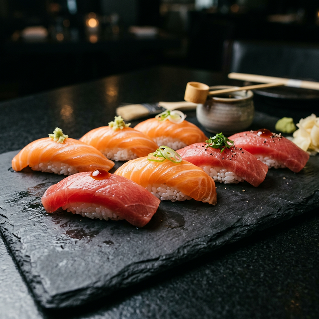
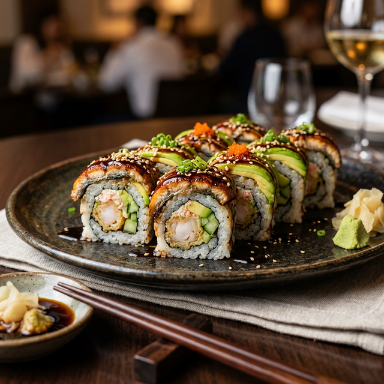
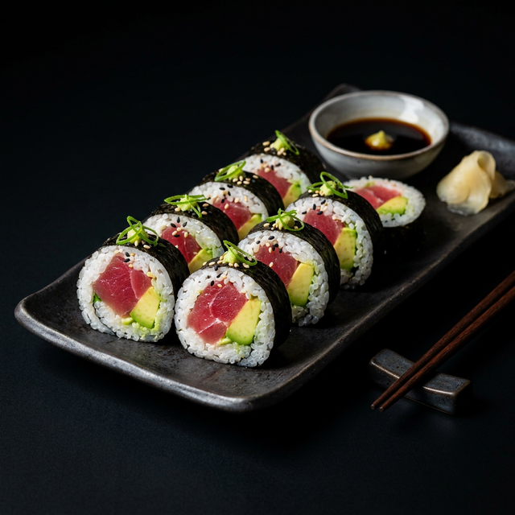
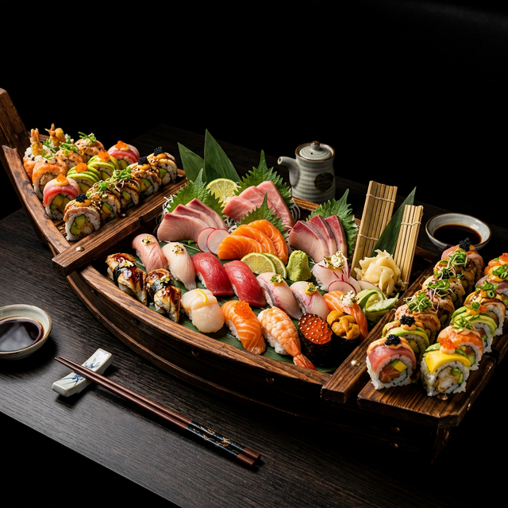
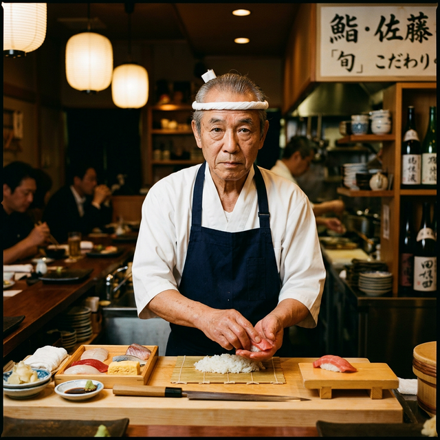
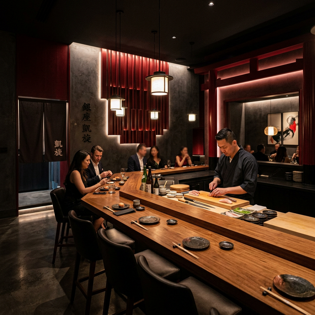

Genießen Sie authentische japanische Küche mit frischen Zutaten, traditioneller Zubereitung und modernem Ambiente.




Tauchen Sie ein in eine Welt voller Geschmack und Eleganz.
Genießen Sie frisches Sushi mit hochwertigen Zutaten, die täglich geliefert werden.

Unsere Köche bereiten jedes Gericht mit Leidenschaft und jahrelanger Erfahrung zu.

Reservieren Sie Ihren Tisch online oder telefonisch für einen besonderen Abend.
Was unsere Gäste über Sakura sagen
"Das beste Sushi, das ich je gegessen habe. Die Atmosphäre ist ruhig und elegant."
"Frische Zutaten und wunderschöne Präsentation. Absolut empfehlenswert!"
"Sehr freundlicher Service und authentische japanische Küche."
Besuchen Sie uns oder bestellen Sie bequem nach Hause.